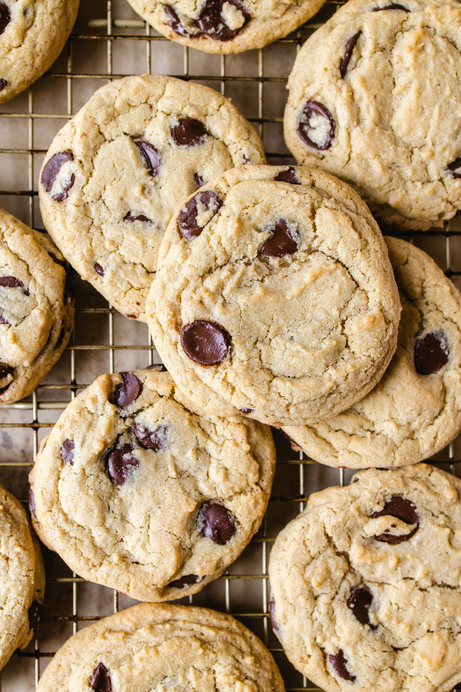

Home
Chocolate chip cookies

Photo by James Trenda on Unsplash
Description
This chocolate chip cookie recipe is truly the best. Just take it from the 14,000 members of the Allrecipes community who have given it rave reviews! These chocolate chip cookies are beloved because they're soft, chewy, and absolutely irresistible. Our top-rated recipe for chocolate chip cookies will quickly become your go-to.
This is obviously not the real Allrecipes site, you can view the real recipe here
Ingredients
- 1/2 cup softened butter
- 1/2 cup white sugar
- 1/2 cup packed brown sugar
- 1 large egg
- 1 teaspoon vanilla extract
- 1/2 teaspoon baking soda
- 1 teaspoon hot water
- 1/4 teaspoon salt
- 3/2 cups all-purpose flour
- 1 cup semisweet chocolate chips
Steps
- Gather your ingredients, making sure your butter is softened, and your egg is at room temperature.
- Preheat the oven to 350 degrees F (175 degrees C). Beat butter, white sugar, and brown sugar with an electric mixer in a large bowl until smooth.
- Beat in the egg, then stir in vanilla.
- Dissolve baking soda in hot water. Add to batter along with salt.
- Stir in flour and chocolate chips.
- Drop spoonfuls of dough 2 inches apart onto ungreased baking sheets.
- Bake in the preheated oven until edges are nicely browned, about 10 minutes.
- Cool on the baking sheets briefly before removing to a wire rack to cool completely.
- Store in an airtight container or serve immediately and enjoy!